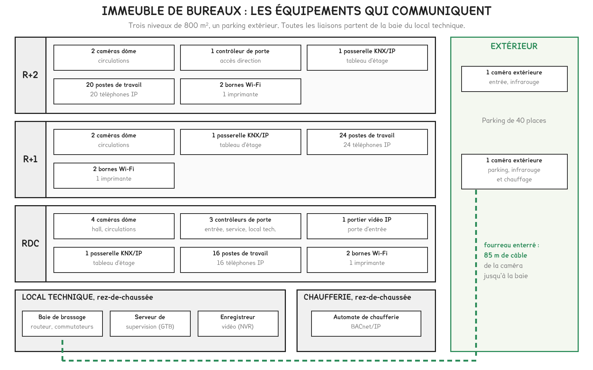
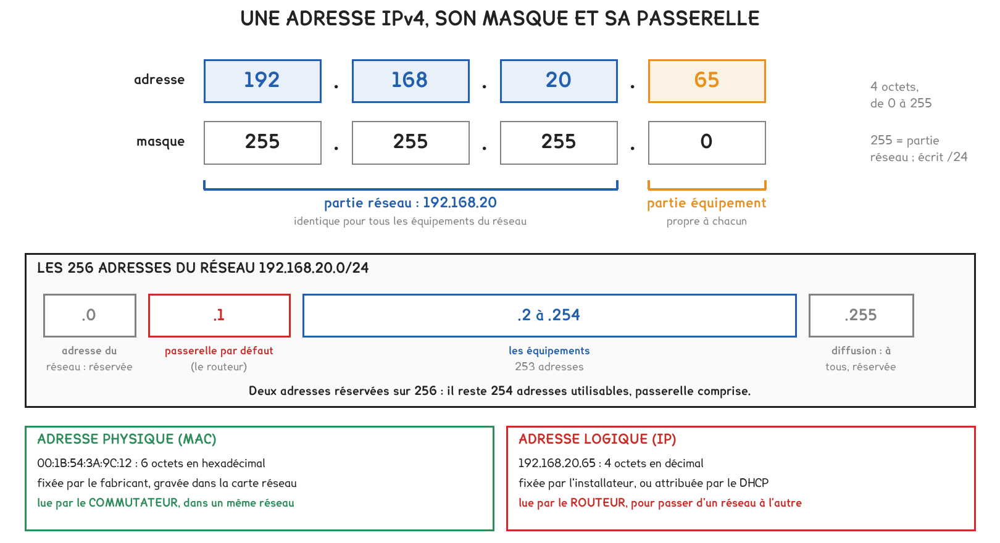
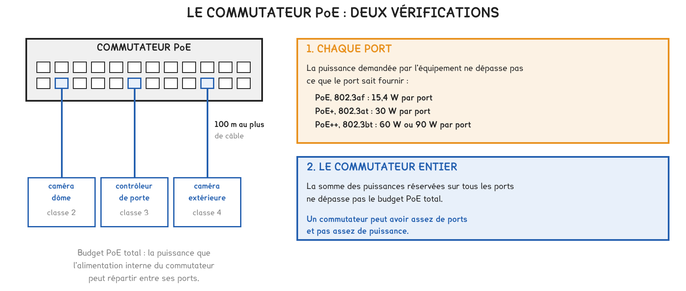
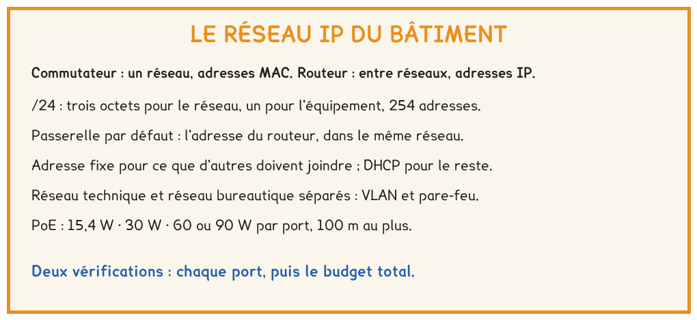

BTS FED option C · 1re année
Un immeuble de bureaux contient deux réseaux informatiques. La séance a établi l'inventaire du réseau technique, son plan d'adressage et le choix du commutateur qui l'alimente.
2 outils · 6 questions · 4 exercices · 3 replis · 5 figures
Savoirs travaillés
L’immeuble de la séance compte trois niveaux et un parking. Ses équipements communicants se répartissent entre deux réseaux IP, qui ne servent pas les mêmes personnes.

Trois pièces du dossier ont été établies : l’inventaire des équipements, le plan d’adressage du réseau technique et le choix du commutateur. L’atelier de la même semaine s’en sert pour mettre un réseau en service.
Le réseau technique raccorde ce qui fait fonctionner et surveiller le bâtiment : supervision, caméras, contrôle d’accès, portier, passerelles KNX/IP, automates. Le réseau bureautique raccorde le travail des occupants.
Le commutateur relie les équipements d’un même réseau, à partir de leur adresse physique (MAC). Le routeur relie des réseaux différents, à partir de l’adresse logique (IP). Tout échange entre les deux réseaux traverse le routeur-pare-feu, qui n’autorise que les flux prévus.
Pour aller plus loin
Trois raisons, dans l’ordre où un maître d’ouvrage les entend.
La sécurité. Un poste de travail compromis ne doit pas pouvoir atteindre un contrôleur de porte ou un automate de chaufferie, qui sont peu protégés et commandent des fonctions de sûreté.
La disponibilité. Les sauvegardes et les mises à jour du réseau bureautique ne doivent pas priver la vidéo du débit dont elle a besoin.
Les responsabilités. Le réseau bureautique appartient au locataire et change souvent ; le réseau technique relève de l’exploitant du bâtiment et doit rester stable pendant toute la vie des installations.
Dans un petit bâtiment, un seul commutateur dessert parfois les deux réseaux. Il est alors partagé en réseaux virtuels, les VLAN : chaque port est affecté à un VLAN, et deux ports de VLAN différents ne communiquent que par le routeur.
Chaque VLAN porte sa propre adresse de réseau. La convention de la séance fait correspondre le numéro du VLAN et le troisième octet : VLAN 10 pour 192.168.10.0/24, VLAN 20 pour 192.168.20.0/24.

192.168.20.65 /24
La passerelle par défaut est l’adresse du routeur dans le réseau de l’équipement.
Une caméra dont la passerelle est fausse envoie quand même son image à un enregistreur placé dans le même réseau. Le défaut ne se voit que le jour où elle doit joindre un autre réseau. Une configuration se vérifie donc sur ses trois réglages, et non sur la seule présence de l’image.
Tout équipement que d’autres doivent joindre reçoit une adresse fixe, inscrite au plan d’adressage : les caméras, que l’enregistreur interroge, les passerelles et l’automate, que la supervision interroge. Le DHCP attribue les adresses des postes de passage, que personne n’a besoin de trouver.

Un commutateur PoE alimente les équipements par le câble réseau, dans la limite des 100 m de l’Ethernet cuivre. Son choix commence par le nombre de ports, puis passe par deux vérifications de puissance.
| Norme | Puissance par port, côté commutateur |
|---|---|
| PoE, 802.3af | 15,4 W |
| PoE+, 802.3at | 30 W |
| PoE++, 802.3bt | 60 W ou 90 W |
Un commutateur peut disposer d’assez de ports sans disposer d’assez de puissance. Un port peut être libre sans pouvoir alimenter un équipement trop puissant.
Pour aller plus loin
Le câble dissipe une partie de la puissance par effet Joule. En PoE, le port délivre au moins 44 V et 350 mA, soit 15,4 W. Sur 100 m, la boucle du câble peut atteindre 20 Ω : les pertes valent 20 × 0,35², soit 2,45 W, et l’équipement ne dispose plus que de 12,95 W.
Le commutateur fournit la puissance de l’équipement et celle des pertes. Il se dimensionne donc sur la puissance côté port.

Exercice · D2-1
Un commutateur doit alimenter six caméras de classe 2 (7,0 W réservés par port) et trois contrôleurs de porte de classe 3 (15,4 W réservés par port).
Quelle puissance totale le commutateur doit-il réserver ?
Exercice · D2-1
Dans un plan d’adressage, les caméras occupent la plage .60 à .99. Douze caméras y sont déjà installées.
Combien de caméras la plage peut-elle encore accueillir ?
Exercice · D2-1
L’enregistreur est à l’adresse 192.168.20.11/24. Une caméra est réglée en 192.168.21.64, masque 255.255.255.0, passerelle 192.168.20.1. L’image n’arrive pas.
Quel réglage est en cause ?
Exercice · D2-1
Un commutateur PoE+ au budget de 370 W n’alimente encore que 205 W. Le client demande pourquoi il ne peut pas alimenter une caméra de classe 6. Répondre en trois ou quatre lignes.
La séance suivante traite la compatibilité électromagnétique en courant faible. Elle reprend la caméra du parking de cet immeuble, dont le câble chemine sur 85 m dans un fourreau extérieur.
Cette page rappelle la séance. Elle ne remplace pas le polycopié et ne donne aucun corrigé. Tous les calculs se font dans votre navigateur ; rien n'est enregistré.